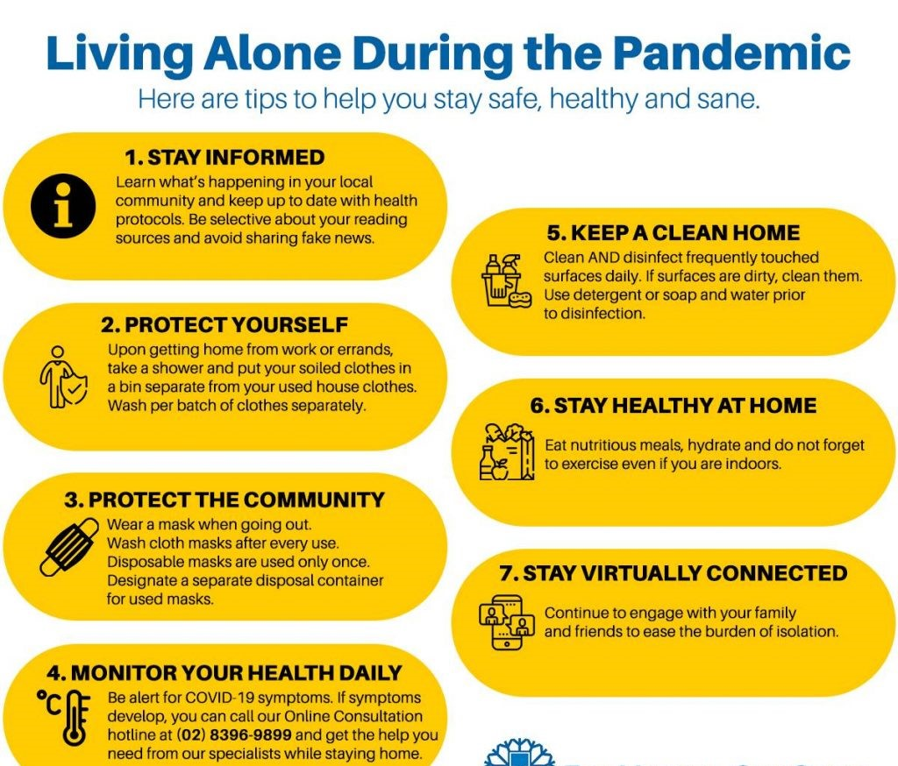

Philippines Travel Requirements: Open Destinations for Leisure Tourism and Restrictions
The coronavirus disease 2019 (COVID-19) pandemic has heavily affected the tourism industry. Leisure tourism is opening up in the Philippines but travel restrictions have been put in place to control the further spread of the virus.
For those who want to travel to the re-opened destinations and top tourist spots in the Philippines, we’ve collected the information you need to plan your vacation in the new normal. Read on to find out which Philippine destinations are open for leisure travel, what are their travel requirements and other restrictions and guidelines imposed by the national and local government units.
Is the Philippines open for tourism?
-
International travelers:
No. Currently, only Balikbayans who are nationals of non-visa required countries, former Filipinos, those traveling with a Filipino or former Filipino spouse or parent, and foreigners with valid and existing visas are allowed to enter the Philippines.
-
Domestic travelers:
Yes (to re-opened destinations only and with restrictions. Traveling within the Philippines is allowed for domestic tourists but is limited to select destinations and with restrictions. Some destinations only allow leisure travel for local residents.

Can Foreigners Travel to the Philippines?
No. The executive order allowing fully vaccinated nationals of non-visa required countries in the Green List to enter the country has been temporarily suspended.
-
Are foreigners allowed to enter the Philippines now?
No. For countries that are under the Green and Yellow List, only the following foreigners are allowed to enter the Philippines:
- Balikbayans under RA 6768 - This is limited to nationals from non-visa required countries under EO 408 and former Filipinos and those traveling with a Filipino or former Filipino spouse or parent.
- Foreign nationals with valid and existing visas - Those with a 9(a) visa are required to present an entry exception document from the country’s foreign post abroad.
-
Domestic travelers:
Yes (to re-opened destinations only and with restrictions. Traveling within the Philippines is allowed for domestic tourists but is limited to select destinations and with restrictions. Some destinations only allow leisure travel for local residents.
Is it safe to travel to the Philippines now?
In terms of health, the national government and the local government units have safety guidelines in place to lessen the spread of COVID-19. These include the wearing of face masks, social distancing, and the requirement of a negative COVID-19 test result and/or a vaccination card or certificate when crossing local borders. Following these rules will reduce your chances of contracting the disease.
Tourist spots are generally safe, but it’s always best to be alert, make sure all your belongings are secure, and be cautious when interacting with strangers.
Are US citizens allowed to travel to the Philippines?
No. Only US citizens who are Balikbayans or traveling with a Filipino or former Filipino spouse or parent are allowed to travel to the Philippines. Those with valid and existing visas are also allowed.
What requirements are foreigners required to present to enter the Philippines?
Travel to the Philippines without a visa is restricted. Below are the following requirements for foreigners traveling to the Philippines:
-
Balikbayan
No. For countries that are under the Green and Yellow List, only the following foreigners are allowed to enter the Philippines:
- Must come from a non-visa required country under EO 408.
- Those traveling with their Filipino spouses and parents need to provide proof of filiation.
-
Foreign nationals with valid and existing visas:
- Valid visa and ACR I-Card.
- Those with a 9(a) visa are required to present an entry exception document from the country’s foreign post abroad.
All inbound travelers are also required to undergo quarantine at an accredited quarantine hotel or facility. The length of the quarantine depends on which classification their origin of country is in and the traveler's vaccination status, but each traveler must present a confirmed booking as part of the requirements for entry.